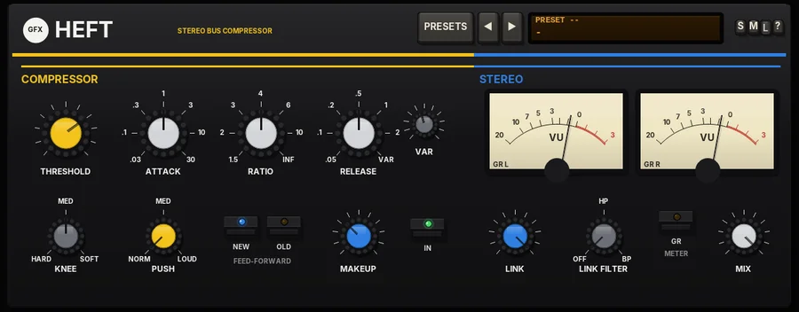

Heft
A stereo VCA bus compressor with stepped controls, a THRUST side-chain filter and new or old detection.

Overview
Heft is a stereo VCA bus compressor in the spirit of the famous American bus compressor with the stepped controls and the THRUST switch. It is made for gluing mixes, drum buses and groups.
THRUST shapes what the compressor listens to: at LOUD the lows count much less and the highs more, so the bass no longer drives the compression and mixes stay big and punchy. TYPE chooses between NEW (feed-forward: precise and firm) and OLD (feedback: the detector hears its own output, so it is softer and more forgiving and the ratio eases off on big peaks - the vintage feel).
LINK sets how much the two sides share one gain, from independent to fully linked, and LINK FILTER decides what part of the spectrum is shared. MIX blends in the dry signal for parallel compression.
Reach for it for
- Mix-bus glue
- Punchy drum and percussion buses
- Parallel 'smash' compression (MIX)
- Keeping a bass-heavy mix from pumping (THRUST)
- Vintage, forgiving bus compression (OLD)
Controls
The header
- PRESETS
- Opens the list of factory presets (a click on the preset display does the same). A preset sets the COMPRESSOR and STEREO controls; the last entry resets everything to the defaults.
- ◄ / ►
- Step to the previous or next preset. The display shows the number and name of the preset in use.
- S / M / L
- Panel size: small, medium or large. The panel also scales to fit the plugin window.
- ?
- Opens a pop-up with the design credit, the GFX website address and the address of this manual. Click anywhere to close it.
COMPRESSOR
- THRESHOLD (yellow cap)
- Where it starts working, -40 to 0 dB (-12 dB by default). Turn it down for more compression.
- ATTACK
- Stepped: .03, .1, .3, 1, 3, 10 or 30 ms (1 ms by default). Short times catch the transients; longer ones let the punch through.
- RATIO
- Stepped: 1.5, 2, 3, 4, 6, 10 or INF : 1 (4:1 by default). INF is limiting.
- RELEASE
- Stepped: .05, .1, .2, .5, 1 or 2 s, or VAR (set by the VAR knob). 0.5 s by default.
- VAR
- The release time used when RELEASE is on VAR, 0.05 - 3 s. Its cap turns yellow when it is in use.
- KNEE
- HARD, MED (6 dB) or SOFT (12 dB). Softer knees ease the compression in around the threshold.
- THRUST (yellow cap)
- What the detector hears. NORM: flat. MED: the lows count less (about 6 dB down) and the highs a little more. LOUD: the lows count much less (about 12 dB down) and the highs more. The audio itself is not filtered.
- NEW / OLD
- The detector type. NEW: feed-forward - it hears the input; precise and firm. OLD: feedback - it hears its own output; softer and more forgiving, and the ratio eases off on big peaks. The words under the keys show FEED-FORWARD or FEEDBACK.
- MAKEUP (blue cap)
- Make-up gain, -10 to +20 dB.
- IN
- Switches the compressor in or out (in by default; the light shows when it is in). Out, the audio passes straight through.
STEREO
- VU meters
- Two needle meters, left and right, showing gain reduction (GR L / GR R) or output level (OUT L / OUT R).
- LINK (blue cap)
- How much the two sides share one gain, from IND (each side on its own) to 100 (both sides get the same gain, so the image stays still). 100 by default.
- LINK FILTER
- What part of the spectrum is shared by the link. OFF: everything. HP: the lows are left out of the link. BP: only the mids are shared.
- METER
- Switches the VU meters between GR and OUT.
- MIX
- Parallel compression: the WET amount, 0 - 100. 100 is fully compressed; lower settings blend the dry signal back in.
Heft has no output-stage fold-out. Its input guard is on in the background: very hot sources are gently eased down towards about -18 dBFS average and fast peaks above -6 dBFS are caught before the compressor; quiet sources are never boosted.
Presets
- Mix Bus Glue
- 2:1, 3 ms attack, 1 s release, soft knee, MED thrust, HP link filter, 2 dB makeup.
- Big Mix (loud thrust)
- 4:1 with LOUD thrust and HP link filter, for a big mix that keeps its low end.
- Drum Bus Punch
- 6:1, 1 ms attack, 0.2 s release, hard knee, MED thrust, 80% link, 6 dB makeup.
- Drum Smash (parallel)
- 10:1 with the fastest attack and LOUD thrust, heavily compressed and blended in at 40%.
- Vintage Feedback
- 3:1 OLD detection, 3 ms attack, VAR release, soft knee.
- Vocal Bus
- 4:1, 0.3 ms attack, medium knee, 4 dB makeup.
- Wide Stereo (independent)
- 2:1 OLD detection with the sides unlinked, for a wider, livelier image.
- Bus Limiter
- INF:1, 0.1 ms attack, fast release, hard knee: a bus limiter.
- Bass Control
- 4:1, 10 ms attack, medium knee, 5 dB makeup, to even out the low end.
- Room Pump
- 6:1 OLD detection with LOUD thrust, BP link filter at 50% link, 60% mix: a pumping room or parallel sound.
- Reset all to defaults
- Every control back to its starting value.
Tips
- For mix-bus glue, start with RATIO 2, ATTACK 10 or 30 ms, RELEASE on .2 or VAR, and aim for 1 - 3 dB on the GR meters.
- If the kick or bass makes the whole mix pump, move THRUST to MED or LOUD.
- OLD is more forgiving on dense mixes; NEW is tighter and better for controlling peaks.
- Lower LINK, or use LINK FILTER HP, if the stereo image feels squashed into the middle.
- For parallel compression, set a heavy setting first (RATIO 10, fast attack), then bring MIX down until the dry punch comes back.
File: gfx-heft.jsfx